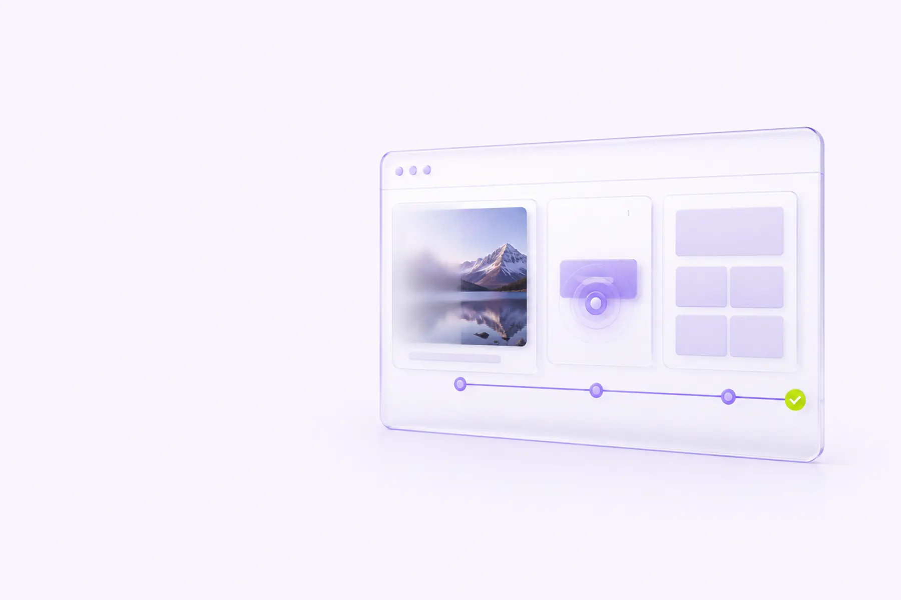

Core Web Vitals Performansının Geliştirilmesi: LCP, INP ve CLS için Sahadan Notlar
PageSpeed skorunu 100 yapmak ayrı bir hedef, gerçek kullanıcıların sayfayı hızlı ve kararlı bulması ayrı bir hedef. Bu yazıda ikisi arasındaki farkı ve üç metriği (LCP, INP, CLS) sahada gerçekten iyileştiren adımları anlatıyorum.

Bir sitenin "hızlı" olup olmadığını sorduğunuzda genellikle iki farklı cevap alırsınız: geliştiricinin "Lighthouse'ta 95 alıyoruz" cevabı ile kullanıcının "sayfa açılırken buton bir anda yer değiştiriyor, sinir bozucu" şikayeti. Bu ikisi çoğu zaman birbiriyle çelişmez ama aynı şeyi de ölçmez. Core Web Vitals'ı gerçekten iyileştirmenin ilk adımı, bu iki farklı gerçekliği ayırt etmek: laboratuvar verisi ve saha verisi.
1. Laboratuvar verisi mi, saha verisi mi?
PageSpeed Insights'ı açtığınızda üstte gördüğünüz büyük skor, Lighthouse'un tek bir simüle cihazda ve tek bir ağ koşulunda (genelde orta seviye bir Android cihaz + yavaşlatılmış 4G) yaptığı senkron bir ölçümdür. Bu, laboratuvar verisidir: tekrarlanabilir, hata ayıklamak için ideal, ama tek bir kullanıcının tek bir anını temsil eder.
Sayfanın biraz aşağısında ise "Discover what your real users are experiencing" başlığı altında farklı bir tablo çıkar. Bu, Chrome kullanıcı deneyimi raporundan (CrUX) gelir: son 28 günde, gerçekten o sayfayı Chrome ile ziyaret eden kullanıcılardan toplanan anonim ölçümlerin toplamıdır. Google Arama Konsolu'ndaki "Önemli Web Verileri" raporu da bu saha verisine dayanır — sıralama sinyali olarak kullanılan veri budur, Lighthouse skoru değil.
Sahada gördüğüm en yaygın yanılgı: Ekip aylarca Lighthouse skorunu 100'e çıkarmaya odaklanıyor, ama Search Console'daki gerçek kullanıcı verisi "Zayıf" kalmaya devam ediyor. Sebep genelde şu: test, geliştiricinin hızlı fiber bağlantısından ya da ofis Wi-Fi'ından yapılıyor; gerçek kullanıcı kitlesinin önemli bir kısmı ise orta seviye bir telefon ve daha yavaş bir mobil bağlantıyla geliyor. İkisi arasındaki farkı kapatmadan "hızlı site" iddiası havada kalıyor.
2. Üç metrik, üç farklı problem
Core Web Vitals üç metrikten oluşur ve her biri farklı bir kullanıcı şikayetine karşılık gelir:
| Metrik | Neyi ölçer | İyi eşik (p75) |
|---|---|---|
| LCP (Largest Contentful Paint) | Görünür alandaki en büyük içerik öğesinin ne zaman render edildiği | ≤ 2.5 sn |
| INP (Interaction to Next Paint) | Bir tıklama/dokunma/tuş etkileşiminden sonra ekranın ne kadar sürede tepki verdiği | ≤ 200 ms |
| CLS (Cumulative Layout Shift) | Sayfa yüklenirken/etkileşim sırasında görsel öğelerin ne kadar "kaydığı" | ≤ 0.1 |
Buradaki "p75" kısmı önemli: Google bu metrikleri ortalama değil, kullanıcılarınızın %75'inin yaşadığı deneyimi (75. yüzdelik dilim) baz alarak değerlendiriyor. Yani sitenizin çok hızlı açıldığı iyi senaryolar değil, kullanıcılarınızın çoğunluğunun en kötü ihtimalle yaşadığı deneyim önemli.
3. LCP'yi iyileştirmek: en büyük öğeyi olabildiğince erken göstermek
LCP genelde bir görsel, bir video posteri ya da büyük bir başlık metnidir. Sahada en sık karşılaştığım LCP sorunları ve çözümleri şöyle:
- Sunucu yanıt süresi (TTFB) yüksek: LCP'nin saati sunucudan ilk baytın gelmesiyle başlar. TTFB 600ms'nin üzerindeyse, LCP'nin geri kalanı ne kadar optimize edilirse edilsin tavan bir yerde kalır. Statik sayfa üretimi, CDN önbellekleme ve sunucu tarafı önbellek katmanları burada en büyük kazancı sağlar.
- Render-blocking CSS/JS: Head içinde senkron yüklenen büyük CSS dosyaları ya da
<script>etiketleri, tarayıcının içerik göstermeden önce indirip işlemesi gereken kaynaklardır. Kritik olmayan CSS'i ertelemek, JS'edeferya daasynceklemek doğrudan LCP'yi düşürür. - LCP görseline öncelik verilmemesi: Tarayıcı, HTML'i satır satır işlerken hangi görselin "en büyük içerikli öğe" olacağını önceden bilemez; bu yüzden görseli sayfanın altındaki bir kaynaktan sonra keşfedebilir.
fetchpriority="high"ve<link rel="preload" as="image">ile tarayıcıya "bu görseli hemen indir" demek, LCP'de gözle görülür bir iyileşme sağlar. - Lazy loading'in yanlış kullanımı:
loading="lazy"harika bir özellik ama LCP adayı olan, katlanma çizgisinin üstündeki görsele uygulandığında tam tersi etki yapar — tarayıcı görseli geciktirir. Kural basit: ilk ekranda görünen görsellerdelazykullanmayın, aşağıdakilerde kullanın. - Optimize edilmemiş görsel formatı: WebP/AVIF gibi modern formatlar, aynı görsel kalitesinde JPEG/PNG'ye göre çoğunlukla %30-50 daha küçük dosya boyutu verir. Responsive
srcsetile de cihaz genişliğine uygun boyut sunulmalı; masaüstü için hazırlanmış 2400px genişliğindeki bir görseli mobilde 380px'e sıkıştırarak göstermek saf bant genişliği israfıdır.
<link rel="preload" as="image" href="/img/hero.avif" fetchpriority="high">
<img src="/img/hero.avif" alt="..." fetchpriority="high" width="1200" height="675">4. INP'yi iyileştirmek: ana iş parçacığını rahat tutmak
INP, kullanıcı bir şeye tıkladıktan sonra ekranın tepki vermesi için geçen süreyi ölçer. Buradaki asıl düşman, uzun görevler (long tasks): JavaScript'in ana iş parçacığını 50ms'den uzun süre meşgul ettiği bloklardır. Bir kullanıcı bu sırada bir düğmeye tıklarsa, tarayıcı görevi bitirene kadar tepki veremez.
- Büyük görevleri parçalayın: Tek seferde 300ms süren bir fonksiyonu, aralarına tarayıcıya nefes alma payı bırakan (
scheduler.yield(),setTimeout(fn, 0)ya darequestIdleCallback) küçük parçalara bölmek, algılanan tepki verebilirliği belirgin şekilde artırır. - Üçüncü parti script'leri denetleyin: Analitik, canlı destek widget'ı, reklam script'leri genelde ana iş parçacığında ağır iş yapar ve geliştirme ekibinin doğrudan kontrolü dışındadır. Bunları
asyncyüklemek, mümkünse kullanıcı etkileşiminden sonra (ör. scroll ya da 3 saniye gecikmeyle) yüklemek büyük fark yaratır. - Event handler'larda gereksiz iş yapmayın: Bir
inputya dascrollevent handler'ı içinde senkron DOM okuma/yazma döngüsü (layout thrashing) yapılıyorsa, her tuş vuruşu tarayıcıyı yeniden layout hesaplamaya zorlar. DOM okumalarını yazmalardan ayırın, mümkünserequestAnimationFrameiçine alın. - Hydration maliyetini azaltın: React/Vue gibi framework tabanlı sitelerde, sayfa "görsel olarak hazır" göründüğü halde JavaScript hala hydrate oluyor olabilir; bu sırada gelen bir tıklama gecikmeli yanıt alır. Kod bölme (code splitting) ve gerekmeyen bileşenleri geciktirerek yüklemek (lazy hydration) burada işe yarar.
5. CLS'i iyileştirmek: yer kaplayan her öğeye önceden yer ayırmak
CLS'in sinir bozucu tarafı, kullanıcının bir şeye tıklamak üzereyken içeriğin aniden kaymasıdır — genelde bir görselin, reklamın ya da fontun geç yüklenmesi yüzünden. Çözüm felsefesi tek cümlede özetlenebilir: her öğeye, içeriği gelmeden önce yer ayırın.
- Görsellerde ve video öğelerinde her zaman
widthveheight(ya da CSSaspect-ratio) belirtin; tarayıcı böylece içerik gelmeden önce doğru boşluğu ayırabilir. - Web fontları için
font-display: swapkullanırken, sistem fontu ile web fontu arasındaki metrik farkını (genişlik, yükseklik)size-adjustveya benzer font-metrik override teknikleriyle azaltın; aksi halde font değiştiğinde metin kayar. - Reklam, banner ya da dinamik olarak eklenen bileşenler için sabit minimum yükseklikte bir kapsayıcı (skeleton/placeholder) kullanın.
- Mevcut içeriğin üstüne, kullanıcı etkileşimi olmadan yeni içerik eklemekten kaçının (ör. sayfa yüklendikten 2 saniye sonra üstte beliren bir bildirim çubuğu).
6. Kendi saha verinizi toplamak: RUM neden CrUX'tan daha değerli olabilir
CrUX verisinin bir kısıtı var: yalnızca yeterli trafik alan, Chrome kullanıcı tabanına sahip URL'ler için veri üretiyor. Yeni yayınlanan bir kampanya sayfası, düşük trafikli bir kategori sayfası ya da Chrome dışı bir kullanıcı kitlesine hitap eden bir site için CrUX ya hiç veri vermez ya da "yetersiz veri" der. Bu noktada kendi RUM (Real User Monitoring) katmanınızı kurmak, sorunu 28 gün beklemeden, kendi kullanıcı segmentlerinize (ör. yalnızca mobil, yalnızca belirli bir ülke, yalnızca giriş yapmış kullanıcılar) kırılımlı şekilde görmenizi sağlar.
Bunun için Google'ın resmi web-vitals JS kütüphanesini sayfaya eklemek yeterli. Kütüphane her metrik hesaplandığında bir callback tetikler; bu veriyi kendi analitik altyapınıza (Google Analytics 4 event'i, ya da basit bir fetch ile kendi log uç noktanıza) gönderebilirsiniz:
import {onLCP, onINP, onCLS} from 'web-vitals';
function gonder(metrik) {
navigator.sendBeacon('/analytics/vitals', JSON.stringify({
ad: metrik.name, deger: metrik.value, id: metrik.id, sayfa: location.pathname
}));
}
onLCP(gonder);
onINP(gonder);
onCLS(gonder);sendBeacon kullanmak önemli: sayfa kapanırken ya da sekme değişirken bile veri kaybı olmadan gönderim yapılmasını sağlar, ki INP ve CLS gibi metrikler çoğu zaman sayfa ömrünün sonunda (kullanıcı ayrılırken) kesinleşir.
7. Sunucu ve CDN katmanı: görünmeyen ama en büyük etkiyi yapan kısım
Front-end optimizasyonları (görsel formatı, kod bölme, preload) genelde en görünür ve en çok konuşulan kısım, ama TTFB'yi düşürmeden LCP'de belirli bir eşiğin altına inmek neredeyse imkansız. Sahada en çok fark yaratan üç değişiklik şunlar oldu:
- Statik/edge önbellekleme: Özellikle içerik sık değişmeyen sayfalarda (blog yazıları, ürün sayfaları, kategori sayfaları), sunucunun her istekte veritabanına gidip HTML üretmesi yerine, bir CDN katmanında (Cloudflare, Fastly, ya da barındırma sağlayıcısının kendi edge cache'i) önbelleklenmiş HTML sunulması TTFB'yi genelde 3-4 kata kadar düşürüyor.
- Görsel CDN'i ve otomatik format dönüşümü: Görselleri kendi sunucunuzdan değil, isteğe göre boyutlandırma ve format dönüşümü (AVIF/WebP) yapabilen bir görsel CDN'inden sunmak, hem geliştirme ekibinin manuel olarak onlarca boyut üretme yükünü kaldırıyor hem de her cihaza doğru boyutun gitmesini garantiliyor.
- HTTP/2 ya da HTTP/3 ve bağlantı yeniden kullanımı: Özellikle çok sayıda küçük kaynağın (font, ikon, küçük script) ayrı ayrı istek olarak gittiği sitelerde, protokol seviyesindeki çoklama (multiplexing) bağlantı kurulum maliyetini büyük ölçüde azaltıyor.
Bir e-ticaret projesinde kategori sayfalarının LCP'si 4.2 saniyeden 1.9 saniyeye indi; bunun büyük kısmı yeni bir görsel algoritması ya da JavaScript optimizasyonundan değil, sunucu tarafında önbelleklenmemiş bir veritabanı sorgusunun edge'de önbelleklenen statik bir HTML yanıtına dönüştürülmesinden geldi. Front-end'e dokunmadan önce, sunucunun ilk baytı ne kadar sürede gönderdiğini mutlaka kontrol edin.
8. Önceliklendirme: hangi sayfadan başlamalı?
Bütün siteyi aynı anda optimize etmeye çalışmak genelde hiçbir şeyi bitirmemekle sonuçlanır. Sahada işe yarayan sıralama şu:
- Search Console'daki "Önemli Web Verileri" raporunu açın ve "Zayıf" ya da "İyileştirilmesi gerekiyor" olarak gruplanan URL gruplarını listeleyin.
- Bu grupları trafik hacmine göre sıralayın — en çok organik trafik alan grup önceliklidir, çünkü oradaki iyileştirme en çok kullanıcıyı etkiler.
- Her grup için hangi metriğin (LCP/INP/CLS) sorunlu olduğunu tespit edin; genelde tek bir metrik grubu domine eder.
- Kök nedeni PageSpeed Insights'ın "Diagnostics" bölümünden ve gerekiyorsa Chrome DevTools Performance panelinden doğrulayın; tahmin yürütmeyin.
Sık yapılan hatalar
- Sadece anasayfayı optimize edip, en çok trafik alan kategori/ürün sayfalarını atlamak.
- Tek bir Lighthouse taramasına güvenip, farklı ağ/cihaz koşullarında test etmemek.
- Üçüncü parti script'lerin etkisini göz ardı etmek — çoğu zaman en büyük INP ve LCP kaybı buradan gelir.
- CLS'i sadece görsellerle sınırlı sanmak; dinamik içerik enjeksiyonu ve web fontları da en az görseller kadar etkilidir.
- İyileştirmeden sonra sonucu hemen PageSpeed'ten kontrol edip "düzeldi" demek — saha verisinin (CrUX) yeni durumu yansıtması 28 güne kadar sürebilir.
9. Raporlamayı sürdürülebilir hale getirmek
Tek seferlik bir optimizasyon turu, birkaç ay sonra yeni bir özellik, yeni bir üçüncü parti script ya da fark edilmeden büyüyen bir görsel yüzünden kolayca geri gidebilir. Bu yüzden Core Web Vitals'ı bir proje değil, sürekli izlenen bir metrik seti olarak ele almak gerekiyor. Pratikte işe yarayan yapı şöyle:
- Search Console'daki Önemli Web Verileri raporunu aylık olarak gözden geçirin ve yeni "Zayıf" gruplara erken müdahale edin.
- Büyük bir yayın öncesi (yeni tema, yeni bir üçüncü parti entegrasyon, büyük bir tasarım güncellemesi) mutlaka bir Lighthouse karşılaştırması yapın; regresyonları canlıya çıkmadan yakalamak, sonradan düzeltmekten çok daha ucuz.
- Mümkünse CI/CD sürecine otomatik bir performans bütçesi (ör. Lighthouse CI) ekleyin; belirlenen eşiklerin altına düşen bir değişiklik, dağıtım öncesi ekibe bildirilsin.
- RUM verinizi cihaz tipi, bağlantı hızı ve sayfa şablonu kırılımında izleyin; tek bir ortalama sayı, sorunun nerede olduğunu gizleyebilir.
Sonuç
Core Web Vitals'ı iyileştirmek, tek seferlik bir "performans sprintinden" çok, ölçüm disiplinini sürdürmekle ilgili bir çalışma. Laboratuvar verisiyle saha verisini birbirinden ayırmak, önceliklendirmeyi trafiğe göre yapmak ve her metriğin kök nedenine (TTFB, render-blocking kaynaklar, uzun JS görevleri, yer ayrılmamış öğeler) odaklanmak, skor kovalamaktan çok daha kalıcı sonuç veriyor. Asıl hedef zaten skor değil — sayfanın gerçek kullanıcı için hızlı açılması ve kararlı durması.
PageSpeed Insights skoru yüksek ama Search Console'da Core Web Vitals kötü görünüyor, bu nasıl mümkün?
PageSpeed Insights'ın üstteki skoru laboratuvar (Lighthouse) verisidir ve tek bir simüle cihaz/ağ koşulunda ölçülür. Search Console'daki rapor ise CrUX'tan, yani gerçek kullanıcıların 28 günlük saha verisinden gelir. Laboratuvar skoru iyi olsa da düşük gelir grubu, eski cihaz veya zayıf ağdaki gerçek kullanıcılarınız kötü deneyim yaşıyorsa saha verisi kötü çıkar.
Core Web Vitals doğrudan bir sıralama faktörü mü?
Evet, Google'ın sayfa deneyimi sinyalinin bir parçasıdır, ancak göreli ağırlığı içerik alaka düzeyine kıyasla küçüktür. Pratikte etkisi çoğunlukla dolaylıdır: hızlı ve kararlı sayfalar daha düşük hemen çıkma oranı, daha yüksek etkileşim ve daha iyi tarama bütçesi kullanımı sağlar.
INP, FID'in yerini neden aldı?
FID yalnızca sayfadaki ilk etkileşimin gecikmesini ölçüyordu ve sayfa ömrü boyunca yaşanan tüm etkileşimleri kapsamıyordu. INP, oturum boyunca gözlemlenen tüm etkileşimleri değerlendirip en kötü yüzdelik gecikmeyi raporlayarak gerçek yanıt verebilirliği çok daha iyi yansıtır.
Core Web Vitals iyileştirmesine ne kadar zaman ayırmalıyım?
Bu, sitenin mevcut durumuna ve teknik borcuna göre değişir; ama genel bir kural olarak ilk turda en çok trafik alan sayfa şablonlarına (anasayfa, kategori/ürün, blog yazısı gibi tek bir grup) odaklanıp ölçülebilir bir iyileşme görmek genelde birkaç haftalık, odaklı bir çalışmadır. Asıl zaman alan kısım tek seferlik düzeltme değil, yukarıda anlattığım sürekli izleme disiplinini kurumsallaştırmaktır.